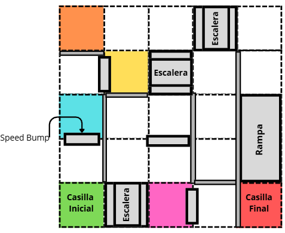
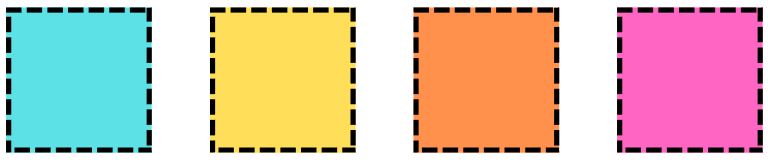
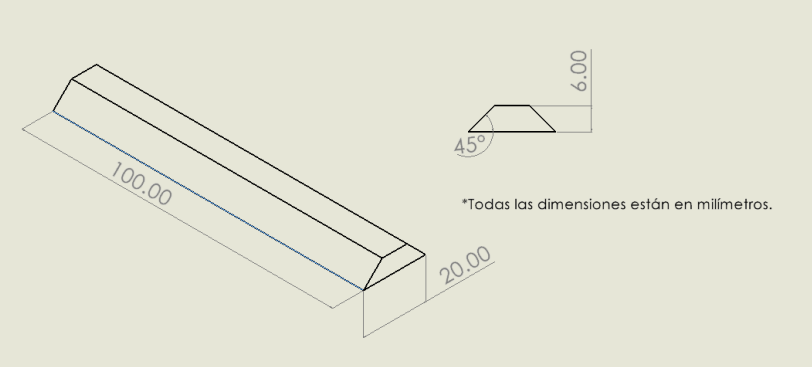
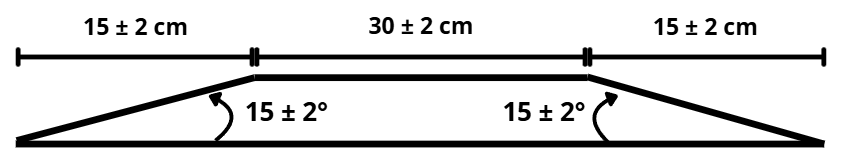
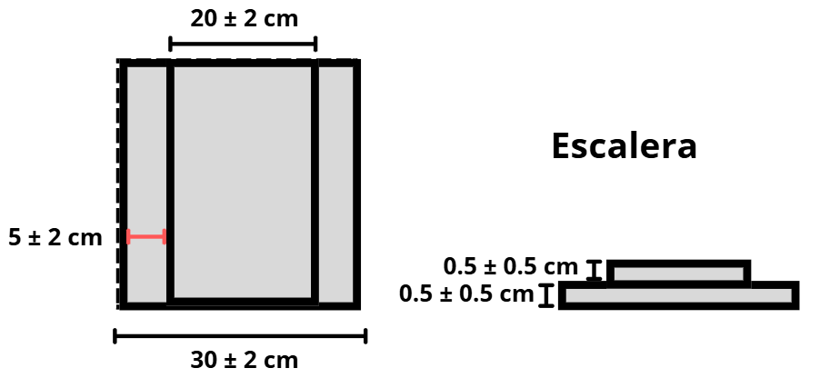
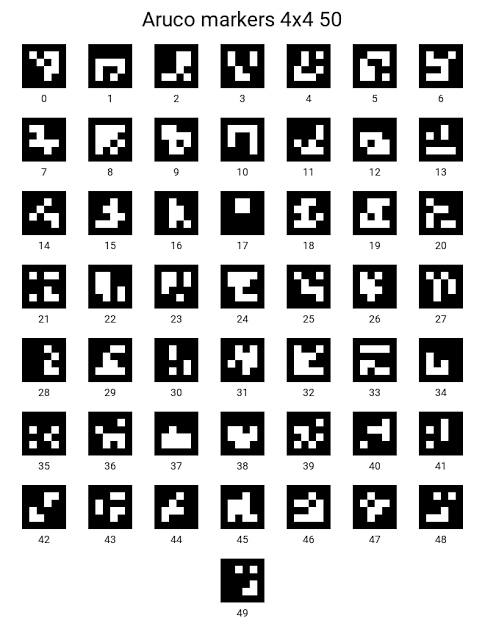

Reto: Maze
El Maze es la pista A de Candidates 2026. Es un laberinto donde el robot tiene que explorar todo sin conocerlo de antemano, reconocer colores en el piso y cruzar obstáculos, hasta llegar a la casilla final. Las reglas que comparten ambos retos (tiempos, lack of progress, límites del robot) están en Reglas generales.
Objetivo
Superar un laberinto de 5 x 5 unidades (cada unidad de 30 x 30 ± 2 cm). Durante el recorrido, el robot:
Explora el laberinto, eligiendo libremente el camino que le convenga.
Detecta los colores del piso y los muestra (con LEDs, pantalla, etc.). El sonido está prohibido.
Cruza obstáculos: speedbumps, escaleras y rampas.
Termina en la casilla roja.


Mapa de la pista A (ejemplo). La casilla verde es el inicio y la roja es el final; sus posiciones cambian en cada ronda.
Importante
Como las posiciones del inicio, del final, de los colores y de los obstáculos cambian entre rondas, y el pre-mapeo está prohibido, el robot tiene que construir su mapa mientras explora. Eso define toda la parte de programación (ver más abajo).
La trayectoria
El recorrido empieza en la casilla verde, pasa por todo el laberinto y termina en la casilla roja. Algunas reglas para tener en cuenta:
No hay una escalera seguida de una rampa (ni una rampa seguida de una escalera).
Hay como máximo 1 rampa, 3 escaleras y 4 speedbumps.
Las paredes miden mínimo 15 cm, y no se pueden pasar por encima.
Entre unidades de distinto color hay una separación blanca.
Los colores
En el piso hay unidades de cuatro colores que el robot debe detectar:


Los cuatro colores a detectar: cian, amarillo, naranja y magenta.
Nota
Los tonos pueden variar entre pistas. Un sensor calibrado solo para un tono exacto puede fallar en la competencia; por eso la calibración del color es importante (ver Sensor de color TCS34725).
Los obstáculos
Las medidas vienen del reglamento. Todas pueden variar ± 2 cm, excepto las escaleras.
Speedbump
Es una barra baja. Mide 100 mm de largo, 20 mm de ancho y 6 mm de alto, con 45° en las orillas (estas medidas salen del dibujo del reglamento).


Dimensiones del speedbump (en milímetros).
Rampa
Ocupa tres unidades de largo: una subida de 15 ± 2 cm a 15 ± 2°, una parte plana de 30 ± 2 cm y una bajada simétrica de 15 ± 2 cm.


Dimensiones de la rampa.
Escalera
Es una unidad de 30 ± 2 cm con dos escalones de 0.5 ± 0.5 cm de alto cada uno (la parte alta mide 20 ± 2 cm de ancho). Son escalones muy pequeños, pero el robot debe poder subirlos y bajarlos.


Dimensiones de la escalera.
Truco
Ninguno de los obstáculos es alto, pero sí cambian la inclinación y la altura del robot. Eso afecta a los sensores de distancia y al giroscopio. Ver cómo lo manejamos en Área de Mecánica.
Bonus
Los bonus son opcionales e independientes: un equipo puede obtener ninguno, uno o ambos.
Bonus 1: recorrido de regreso
El robot llega a la casilla final y regresa por el mismo camino hasta la casilla de inicio. Tiene que pasar por las mismas unidades, en orden inverso. No necesita detectar colores otra vez. Si se sale de ese camino, se cancela el bonus y termina la ronda.
Bonus 2: marcador ArUco
Hay un marcador ArUco (diccionario 4x4_50, ~8 x 8 cm) pegado verticalmente en una pared del laberinto, en una posición que cambia por ronda. El robot debe:
Detectarlo con una cámara mientras recorre la pista (sin detenerse frente a él).
Mostrar su ID con un indicador visible (pantalla, secuencia de LEDs) durante al menos 3 segundos continuos. No se vale indicarlo por serial o Bluetooth a una laptop.
Si lo identifica antes de llegar al checkpoint final, obtiene los puntos. Si no lo detecta o da un ID incorrecto, solo no hay puntos: no hay penalización en el resto del recorrido.


Ejemplo de marcador ArUco.
Puntuación
Acción |
Puntos |
Máximo |
|---|---|---|
Detectar un color y mostrarlo (hasta 4 colores) |
5 c/u |
20 |
Pasar por completo un speedbump (hasta 4) |
5 c/u |
20 |
Superar una escalera, subir y bajar (hasta 3) |
15 c/u |
45 |
Cruzar la rampa, subir y bajar |
20 |
20 |
Llegar al checkpoint final |
25 |
25 |
Bonus 1: regresar por el mismo camino hasta el inicio |
35 |
35 |
Bonus 2: detectar el marcador ArUco |
30 |
30 |
Sumando todo (4 colores, 4 speedbumps, 3 escaleras, la rampa, el final y los dos bonus) el máximo es de 195 puntos. El reglamento no da ese total para esta pista, lo sacamos nosotros sumando la tabla.
Advertencia
Para el reglamento, un color o un obstáculo solo cuenta si el robot lo cruza completo y lo muestra cuando corresponde. Un robot que explora todo pero no muestra los colores pierde esos puntos.
Cómo lo resolvemos
Lo que pide este reto se reparte entre las tres áreas:
Explorar sin mapa previo: el robot guarda en un mapa las casillas que conoce, sus paredes y su color, y decide a dónde ir con una búsqueda en profundidad, regresando sobre sus pasos cuando no hay nada nuevo. Para llegar a la casilla final y regresar usa el camino más corto sobre lo que ya conoce, y guarda la trayectoria recorrida para el bonus de regreso. Está explicado en Máquina de estados (StateMachine) y Introducción a la resolución de maze.
Saber dónde hay paredes: sensores de distancia al frente y a los lados, leídos con votación para no creerle a una sola lectura (ver Sensor laser (VL53L0X) y Sensor Ultrasónico (HC-SR04)).
Girar y avanzar con precisión de casilla: giroscopio y encoders con un PID (ver Introducción a PID).
Detectar colores: sensor de color y una tabla de referencia (ver Sensor de color TCS34725).
Obstáculos: el diseño del chasis y de las ruedas u orugas decide si el robot sube escalones y rampas (ver Área de Mecánica).